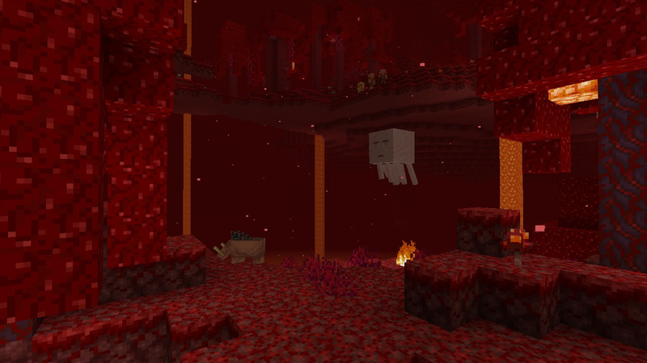
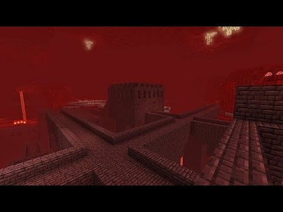
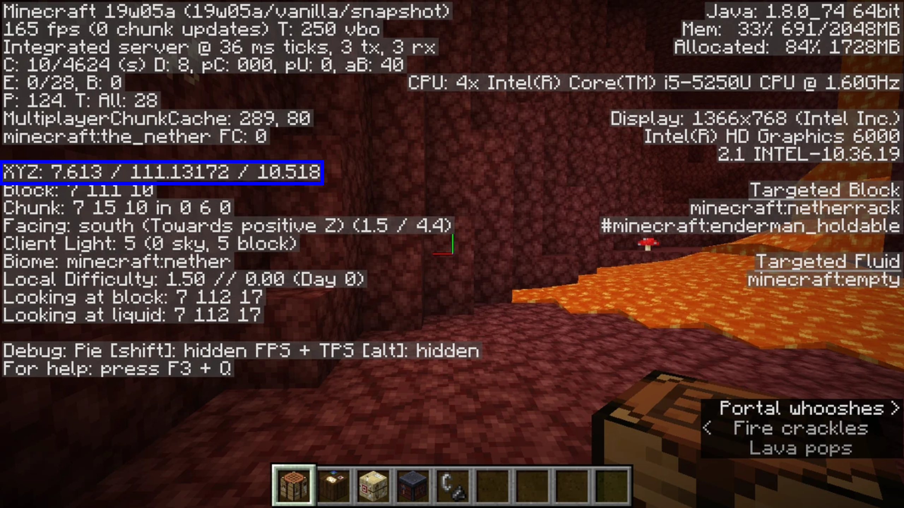
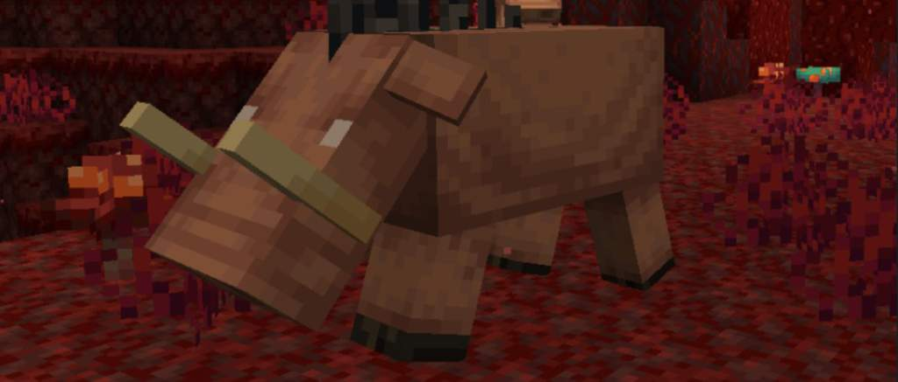
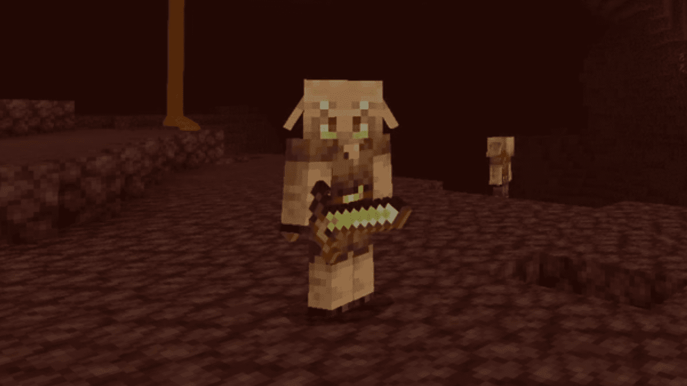
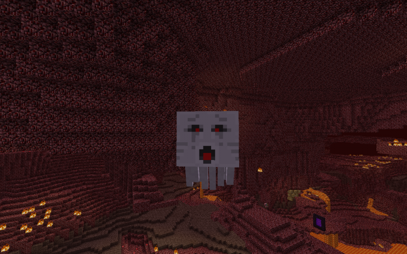
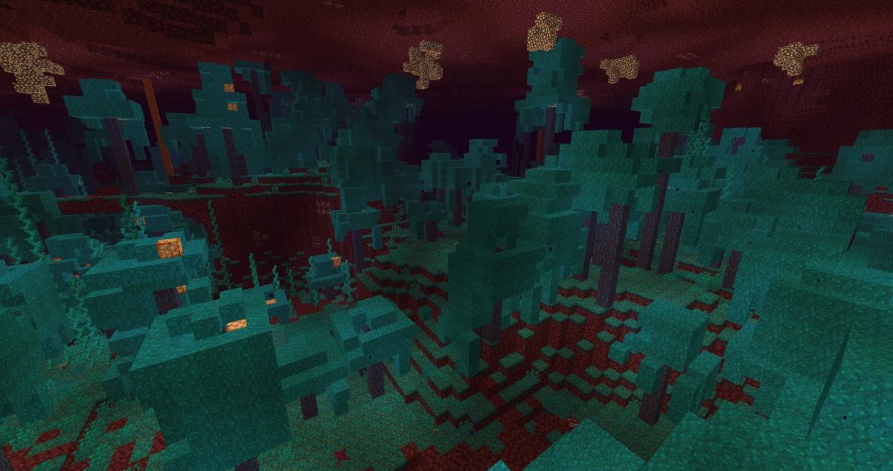
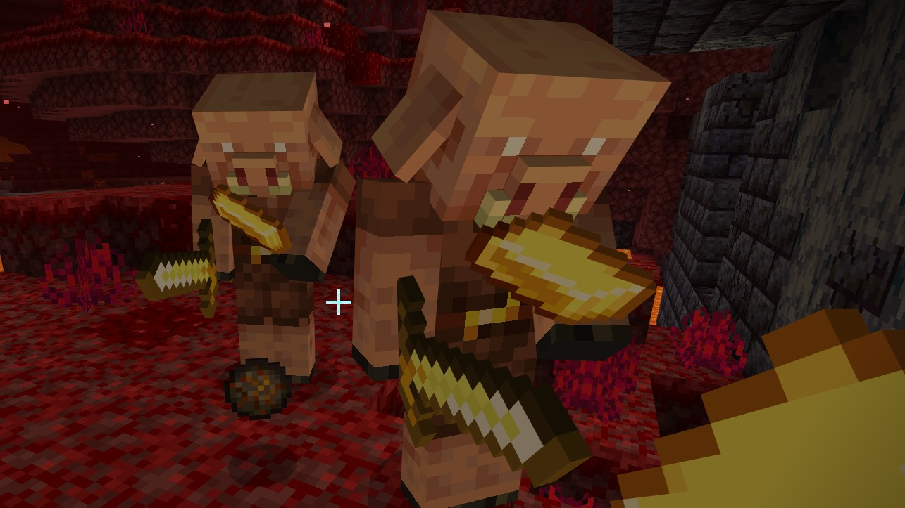
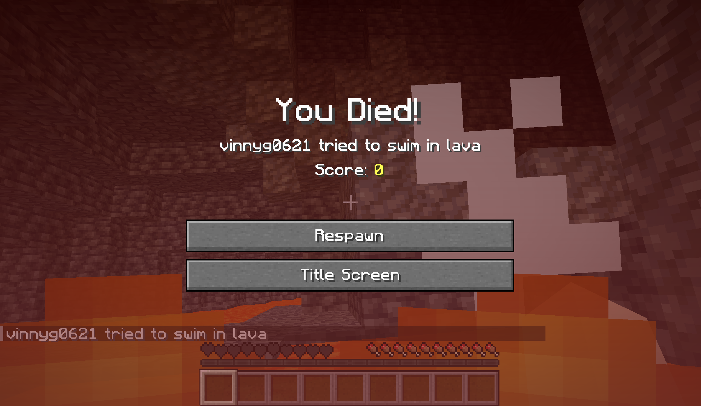
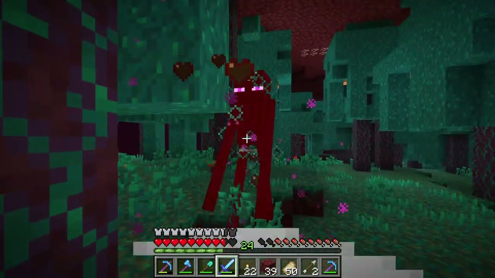

Congrats! Now you've made it to the Nether. This is one of the most dangerous sections of your journey. The Nether is full of lava and dangrous mobs. Your goal in the Nether is to find a structure called a Nether Fortress and collect Eyes of Ender. Below is an example of what a Nether Fortress may look like.

The first thing you want to do in the Nether is write down your coordinates for your portal. This is to make it easier to find your way back if you get lost. Another important thing to note is that if you die in the Nether, you will respawn at your spawn point in the Overworld, and not your portal. You can see your coordinates by pressing f3 on your keyboard. The image below shows where to see your coordinates in the f3 screen outlined in blue.

Another good idea is to build a small room around your portal made out of Cobblestone. There is a mob called a Ghast that can shoot fireballs. If a fireball hits your portal, and you don't have Flint and Steel, you're going to have a rough time getting back home! Cobblestone is a Ghast proof block, so their explosions won't damage it.
The last thing you need to know before you start exploring the Nether is the mobs. The mobs in the Nether are very dangerous and can kill you very quickly. The first mob to look for is a mob called a Hoglin depicted below.

Hoglins are an aggresive mob that have a fairly large amount of health and deal a lot of damage. Even the Baby Hoglins are aggresive. When attacked by a Hoglin, they will knock you backwards and upwards. Due to this, when fighting a Hoglin, be sure to take note of your surroundings during battle. You don't want to get knocked into lava or off the edge of a cliff! Once killed, Hoglins will drop pork chops and leather, making it a good source of food if you run out.
The next mob to be wary of is Piglins. Piglins are peaceful as long as you have at least one piece of gold armor on. The most common gold armor to wear in the Nether is golden boots, as boots are the cheapest piece of armor to make. On top of that, boots cover the smallest area on your body and the least likely to be attacked by a mob. Gold armor and tools run out of durability very quickly, so it's advised to bring an extra set of boots with you when you traverse the Nether. If you aren't wearing any gold armor, Piglins will attack you. Piglins usually spawn in groups and stick together. They will all become aggresive towards you if you attack one of them. Some Piglins carry crossbows, and others have swords, so they are effective at range and melee. Due to them wielding swords, they deal a lot of damage quickly and can kill you in just a few hits. So be careful if you do fight them. Piglins are a great way to get Ender Pearls. This will be covered later in this section.

One of the most pesky mobs is called a Ghast, which will be depicted below. These mobs are so pesky because they are a flying mob. Due to this, killing a Ghast is nearly impossible with a sword. The easiest way to kill a Ghast is with a bow.

Ghasts shoot fireballs at you which can damage you by a direct hit, or by splash damage of it landing near you. When a Ghast fireball explodes, it create fire around the crash site. Be careful when fighting a Ghast, as fire on Netherack (the red block that makes up most of the nether) will never go out. If you get hit by a fireball, it will also set you on fire. Ghasts will make a crying sound when they are nearby, so be sure to listen for them. When a Ghast is about to fire a fireball, they will make a loud screeching sound and open their mouth, revealing a red mouth and eyes.

There are two ways to fight a Ghast. Firstly, and the easiest way, is simply to shoot it with a Bow and Arrow. Thankfully, Ghasts have a relatively low health and are a large creature, so they're fairly easy to hit and kill. Remember to lead your shots and adjust for the drop of the arrow. The other way is to hit the fireball back at the Ghast. This is easier said than done, as the fireball moves very quickly. On top of this, you have to adjust your positioning to lead the shot to hit the Ghast. The farther the Ghast is from you, the harder it is to land the fireball on the Ghast. This is really only recommended if you don't have a bow and can't escape the Ghast.
Another mob to be wary of is Magma Cubes. Magma Cubes are a jumping mob that's similar to Slime Cubes in the overworld, but they are a lot more dangerous. Magma Cubes can jump very high compared to Slime Cubes, and deal a lot of damage. They split into smaller Magma Cubes when killed. Unlike regular slimes, magma cubes can deal damage to you even if they are in their smallest form. There are only select few biomes that Magma Cubes spawn in, as well as Nether Fortresses, so you don't have to worry about them too much.

The following mobs only spawn in the Nether Fortress. The first mob is called a Wither Skeleton. These mobs are a lot more dangerous than regular skeletons, as they have a sword and can inflict the Wither Effect on you. The Wither Effect is similar to that of a Poison Effect. You have probably seen this effect if you have ever fought a Witch. The Poision Effect will drain your health over time but won't kill you. You will always have one heart until the Posion Effect wears off. The key difference between the Poision Effect and the Wither Effect is that the Wither Effect will kill you if you lose too much health. It does not stop at one heart. Due to this, make sure to keep your distance when fighting the Wither Skeletons. They look similar to regular Overworld Skeletons, but are a much darker color. They also naturally spawn with a stone sword instead of a bow. Regular Skeletons will also spawn in Nether Fortresses.

The final mob in Nether Fortresses is called the Blaze. This is a yellow, flying, mob that shoots fireballs. Unlike Ghasts, Blazes shoot their fireballs in bursts, their fireballs are smaller, and they cannot be hit back at the Blaze. Blazes can spawn naturally in a fortress, however, it is much easier to find them at a Blaze Spawner. A Blaze Spawner is a single block that is a cage. They have a small little Blaze spinning inside of it. Destroying the Blaze Spawner will stop the Blazes from spawning, however, it is not recommended to destroy the Spawner as it is a great source of Blaze Rods. Once destroyed, the Blaze Spawner will not respawn. Blazes drop Blaze Rods when killed. This is important as you need Blaze Rods to make the Eyes of Ender. Eyes of Ender will be covered in the End Preparations section.

Now that you know about the mobs in the Nether, it's time to explore! The first thing to do when exploring is to place blocks behind you as you walk. This isn't necessary, but it helps you find your way back to your portal. It's also a good way to see if you have already explored an area. The Nether looks very similar in all directions, so it can be hard to tell if you have already been somewhere. When exploring, there are two things to look for. The first is a Nether Fortress and the second is a Warped Forest. The Warped Forest can be identified by the blue trees and blue grass. The Warped Forest is a great place to find Ender Pearls. This is because Endermen spawn in abundance in the warped forest. When killed, Enderman will drop an Ender Pearl.


Before covering these sections, we can actually skip the Warped Forest section entirely! If you have gold ingots from mining, you can barter with Piglins to get Ender Pearls. If you find a group of Piglins, you can throw a gold ingot on the ground. They will pick it up and throw you an item in return. There is a chance that they will throw you an Ender Pearl, but it is not guaranteed. The easiest way to barter with Piglins is to dig a hole that is 2 blocks deep, and a recommended 2-3 blocks wide. Throw some gold ingots in the hole. The nearby Piglins will run in the hole to pick them up. As long as there is gold on the ground, the piglins will continue to pick them up and throw you items until there is no gold left.

The first section I will cover is the Nether Fortess. There is no specific way to find a Nether Fortress, but there are some tips to help you find one. The first tip is to look for a large open area. Nether Fortresses are usually in large open areas and are very tall. The second tip is to look for a large bridge. Nether Fortresses have large bridges that connect the different sections of the Fortress together. You may end up needing to build a bridge to get to the fortress, or to get to a new area of the Nether. Just like the Overworld, the Nether is infinite, so don't worry if it takes a while to find a Fortess. You'll find one eventually!
Once you've located a Nether Fortess, it's recommended to set up a small base with a door inside the Fortress. This is a good idea, as it will give you a safe place to retreat to if you are being overwhemed by mobs. Next you should look for a Blaze Spawner. This was covered earlier in this section. This is the easiest way to find Blazes in abundance. If you aren't comfortable with fighting Blazes, you can build a small room around the Blaze Spawner. This is to keep you safe from the Blazes and you can go in the room as needed. Another tip is to fight the Blazes at range with a Bow and Arrow. If you are using a shield, a shield will block the fireballs. It is easier to fight Blazes up close, but it is much more dangerous as you can easily get overwhelmed. You want to collect, at an absolute minimum, six Blaze Rods. This is not recommended though. Once you use the Blaze Rods to make the Eyes of Ender, the Eyes of Ender can sometimes shatter when thrown and you need up to twelve. It's recommended collecting around ten to twelve Blaze Rods to be safe.
After you have your Blaze Rods, you can leave the Fortress. The following step isn't necessary, but it is recommended. You can traverse back to you portal and store your Blaze Rods in a chest in the overworld. This is solely because the Nether is a dangerous place! You may die and lose your Blaze Rods. You don't want to have to do this all over again!

Finally, the last step is to find a Warped Forest. As stated previously, this step can be skipped if you already have enough Ender Pearls. For each two Blaze Rods, you'll need one Ender Pearl. So if you have six Blaze Rods, you'll need twelve Ender Pearls. If you have ten Blaze Rods, you need twenty Ender Pearls. So on and so forth. When entering the Warped Forest, remember to not look directly at the Endermen or they will attack you! Once you find a Warped Forest, you will want to find a realatively flat area. These biomes are usually very hilly and have a lot of trees, so make due with what you have. You will then want to build a decent sized platform above you. The platform should be two blocks above the ground. This is because Endermen are three blocks tall and will not be able to reach you if there is a platform above you. You can build the platform out of any block, but I would recommend using cobblestone as it protects you from Ghast fireballs. A good sized platform is about five by five blocks. Once this is done, you can start killing Endermen. Stand underneath of the platform to keep you safe. To kill the Endermen, simply look at them in the face to make them aggresive towards you. They will run at you, then get stuck from the platform above you. This is your chance to kill the Endermen without taking damage. Don't get to close to the edge because they can still hit you!

Once you have enough Ender Pearls, you can head back to your portal. Then its time for PREPARATIONS FOR THE END!